| 日付 | 2018年6月3日（日） |
|---|---|
| 山域 | 那須 |
| メンバー | 家族（妻、長女・7歳、長男・4歳） |
| 山行形態 | 子連れ日帰り |
| アクセス | 車、バス |
| ルート (Map) | 大間々駐車場 (8:36) - (9:25) 八海山神社 - (11:13) 釈迦ヶ岳 (12:08) - (14:45) 大間々駐車場 |
今週末は恐らく、梅雨前最後の週末。
幸運にも天気予報は晴予報を伝えている。
本格的な夏前の最後の山行に、少し遠出して
高原山に行ってみることにする。
日光の北東にある火山で、この時期はツツジの花が咲くため
多くの登山者や観光客が訪れる。
山の駅たかはらの駐車場に車を停める。
先週末と今週末はツツジの花期のため、マイカー規制されていて
無料のシャトルバスが運行されている。
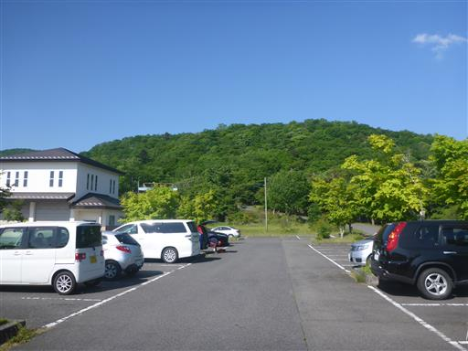
シャトルバスに乗車。8:20発で本日2本目のバスだが、席は全て埋まった。
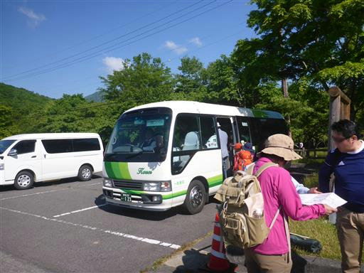
大間々駐車場に到着。標高1280m。
子供たちは展望台を見つけて早速登っている。
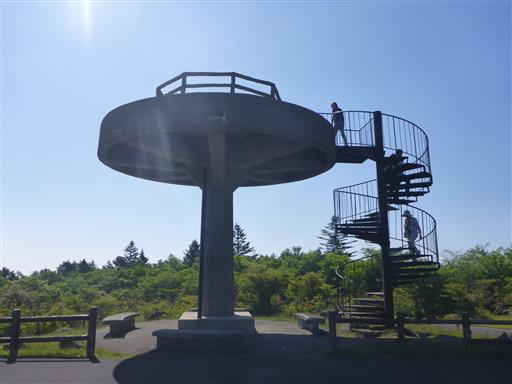
展望台からの景色。大間々台の駐車場は早くに訪れた人の車ですでにいっぱい。
逆に少し手前の小間々台の駐車場はガラガラだった。
目の前に見えるのは、多くのピークを連ねる高原山だ。
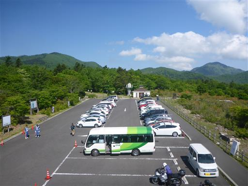
東方向に見えるのは男鹿山塊。マイナーな山域だが、いつか訪れてみたい場所だ。
その奥に薄らと那須連山が見えている。
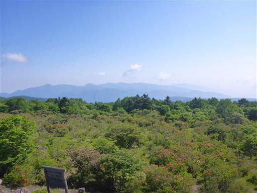
この辺りはレンゲツツジの群落地だ。
ちょうどレンゲツツジの花期で、多くの観光客が訪れる。
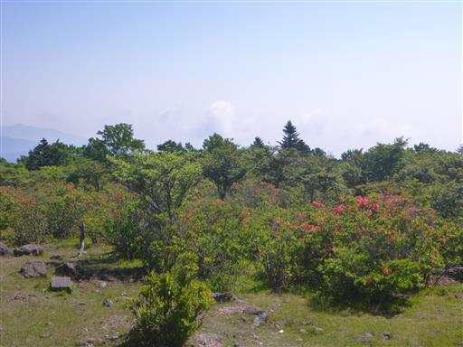
準備を整えて登山開始。本日はそこそこロングコースだ。
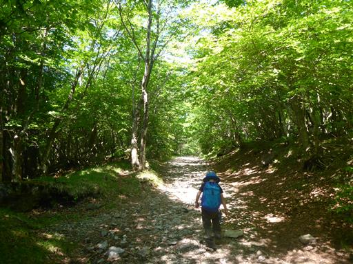
美しい樹林帯の中を登る。うるさいくらいのハルゼミの鳴き声と、
カッコウの鳴き声が森にこだましている。
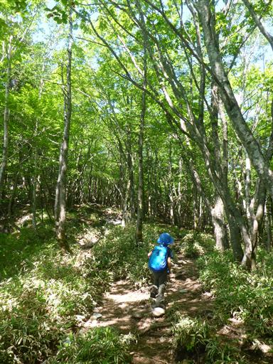
展望の良い場所に出てくる。
目の前に見えるのがこれから目指す高原山の最高峰・釈迦ヶ岳だ。
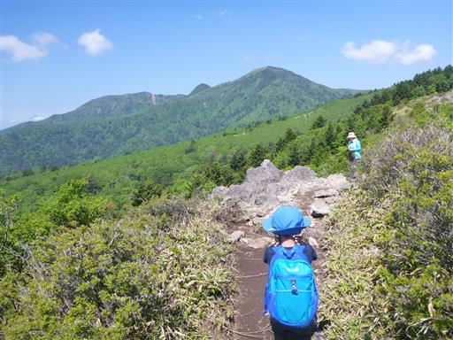
今日は霞みが激しく、遠くの景色は全てぼんやりしている。
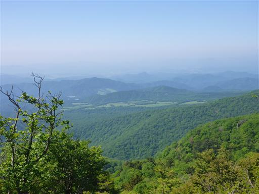
見事に花を付けたヤマツツジ。
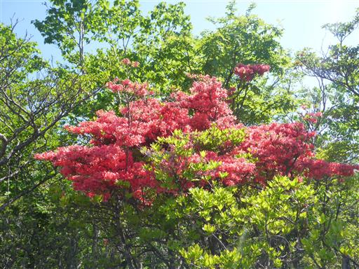
見晴コースと名付けられるだけあって、展望の良い道が続く。
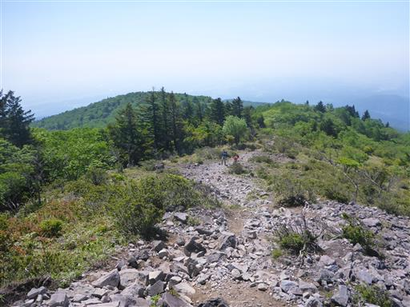
八海山神社に到着。林間コースとの合流点で、一休みするのによい場所だ。
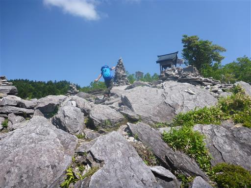
神社に手を伸ばす息子。割れた瓶が散乱していて危ないので阻止。
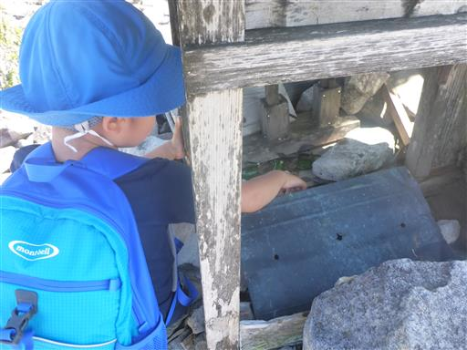
ケルンに登り出す息子。石が崩れ落ちてきそうなので阻止。
危ないことばっかりをやりたがる。。。
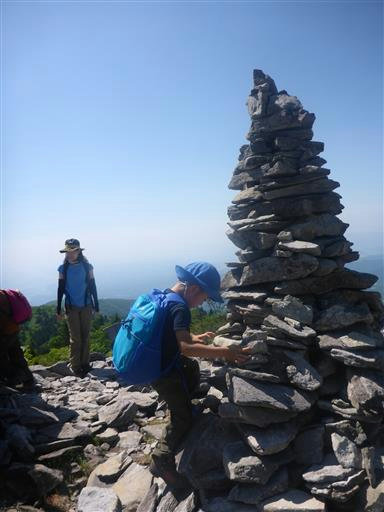
登山道にシロヤシオが現れる。今回の山行の目的の1つはシロヤシオ。
アカヤシオが大好きなのだが、シロも悪くない。
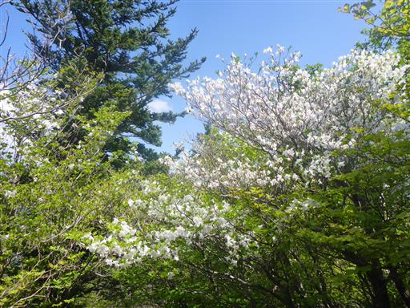
シロヤシオのトンネルを下っていく。
結構アップダウンのあるコースだ。
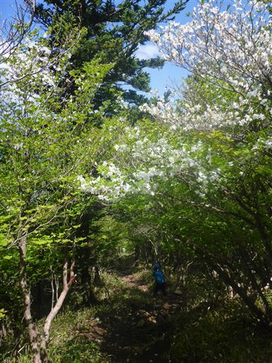
遠くに雪山が見える。会津駒ヶ岳の方だろう。
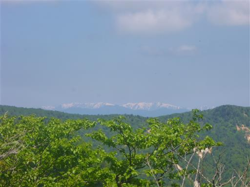
どこを見渡してもシロヤシオ。こんなにたくさん咲いている山は初めてだ。

目の前に釈迦ヶ岳の山頂部が聳えている。まだかなり登る必要がありそうだ。
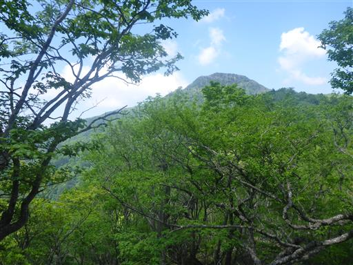
途中までまっすぐ伸びていたのに、途中から曲がって螺旋状になっている。
つる植物にでも巻き付かれたのだろうか？
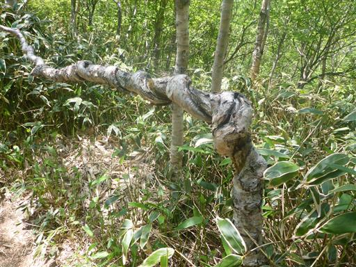
これでもかというくらい、あちらこちらにシロヤシオの花が咲いている。
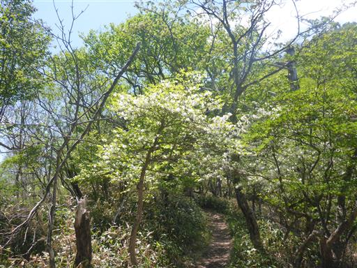
登山道の傾斜がきつくなってきた。
ロープを掴んで体を引っ張り上げる。
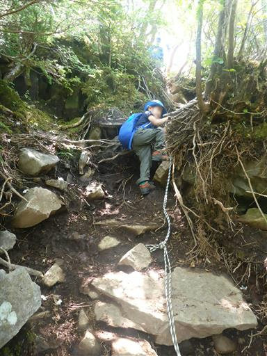
シロヤシオの花のアップ。純白のツツジだ。
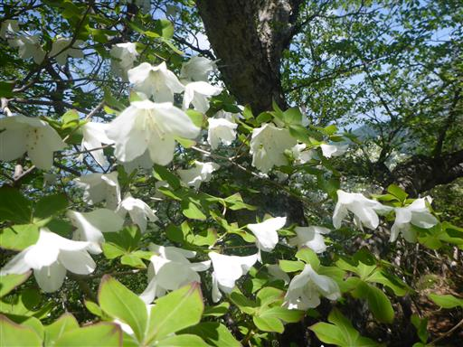
葉は5枚なので、別名五葉ツツジとも呼ばれている。
葉の先は少し赤くなっているものが多い。
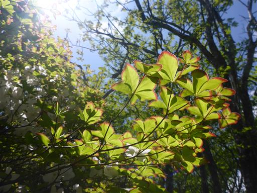
最後の一登り。息子は「もうすぐ山頂？」を繰り返している。
周囲の美しい景色は目に入らないようだ。
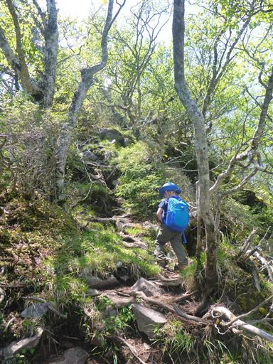
もう少しと励ましながら最後の急登を登って行く。
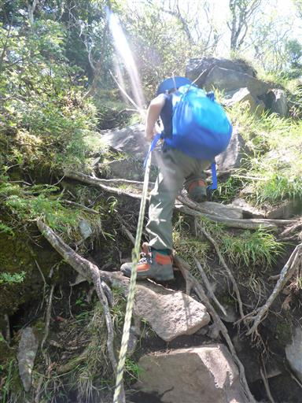
ついに山頂が見えてきた。音を上げていた息子が走り出す。
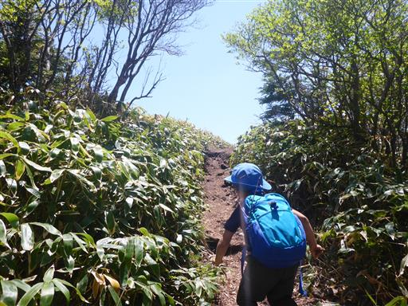
山頂に向かってダッシュ！
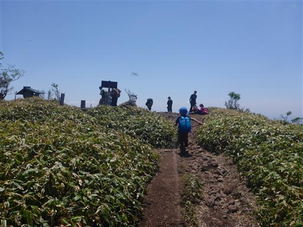
釈迦ヶ岳山頂到着。標高1795m。高原山の最高峰だ。
コースは長くないはずなのだが、暑かったからか結構時間がかかってしまった。
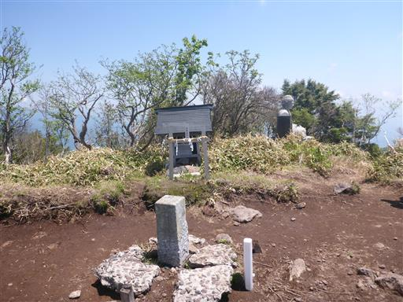
山頂からは広範囲に展望が広がる。
目の前に見える高い山々は日光方面。少し雲が出ている。
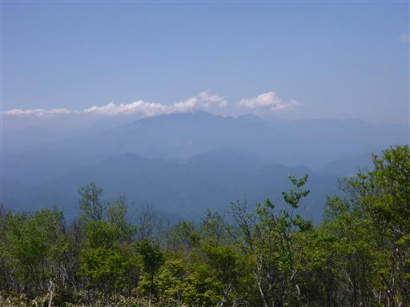
雪をかぶった会津駒ヶ岳。
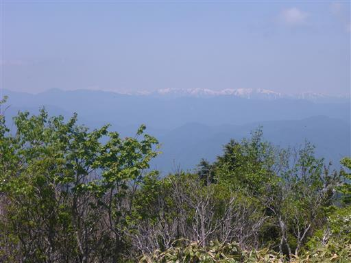
霞の中の平野部。
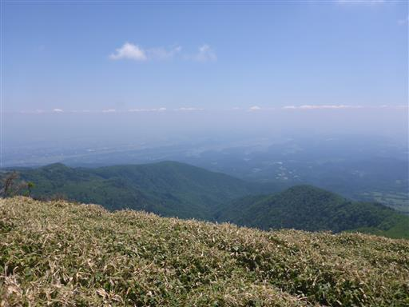
高原山の一峰・鶏頂山。
こちらからも登山道が付いているため、次回は鶏頂山経由で登ってみたい。
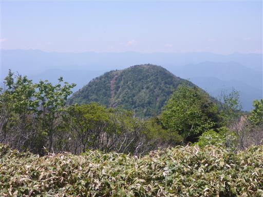
残念ながら男鹿山塊・那須岳方面のみ木に邪魔されている。
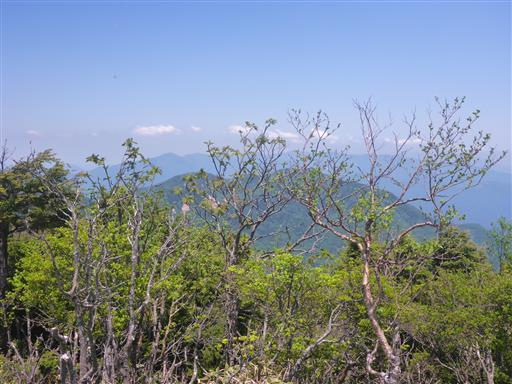
釈迦ヶ岳という名の通り、釈迦如来像が祀られている。
山頂でゆっくり昼食をとり、疲れた体を癒す。
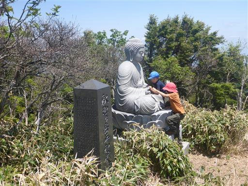
昼食をとったら下山開始。下山はシロヤシオが咲く大入道経由を考えていたが、
時間が押しているのと、シロヤシオはもうお腹いっぱいなので、元来た道を帰ることにする。
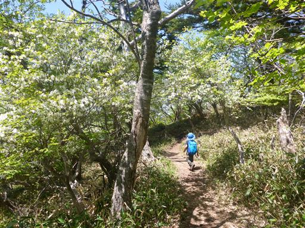
ベニサラサドウダンだろうか？こちらの花も美しい。
これもツツジ科の花だ。
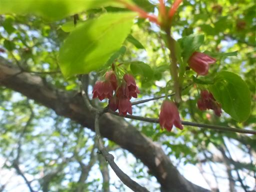
アップダウンのある登山道。下山でもこの山を越える必要がある。
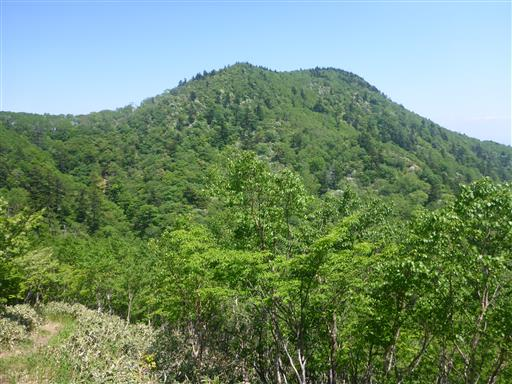
八海山神社からは登りと道を変えて、林間コースを歩くことにする。
こちらは変化に乏しい道だ。
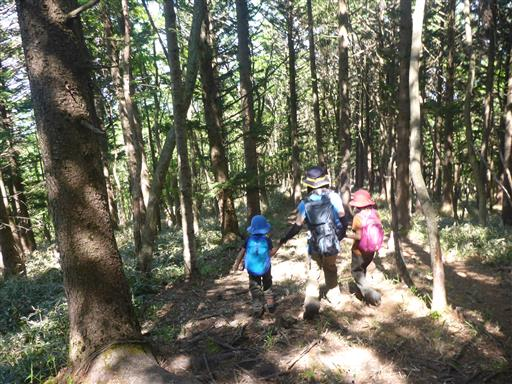
枯れた沢を渡る。
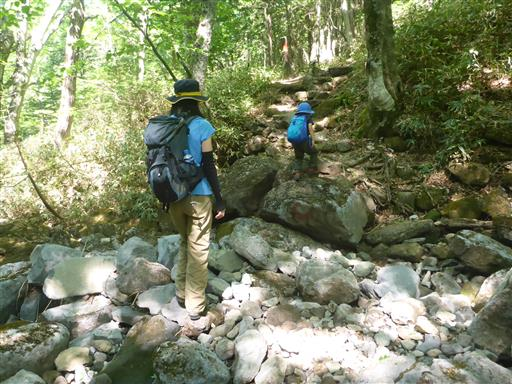
ハルゼミの抜け殻を発見。アブラゼミと比べると非常に小さい。
たくさん見つかったので、いくつか記念に持って帰る。
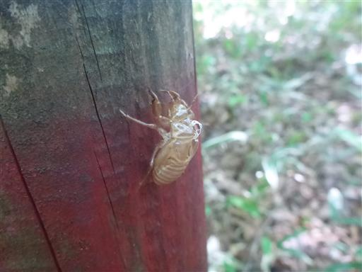
駐車場が見えてきた。時計を見るとバスの時間まであと一分半。
間に合いそうなので駐車場までダッシュする。
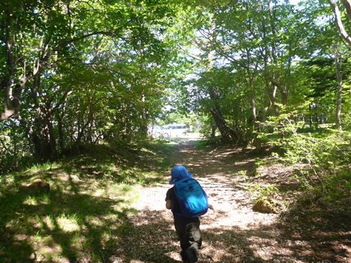
無事、増発のワゴン車に乗ることができ、山の駅まで下りてくる。
売店でソフトクリームを買い、しばし休憩。
長い間登りたいと思っていた高原山は思った以上に素晴らしい山で、
ハルゼミの鳴き声、満開のシロヤシオ、大展望と満足できる山行だった。
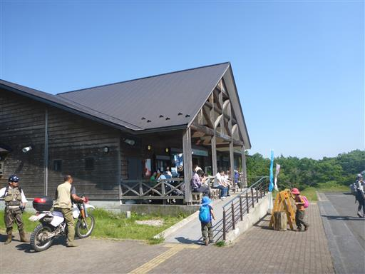